쇼케이스 이용 및 관리
제과쇼케이스 카페쇼케이스 차이, 진열 품목과 놓는 자리로 갈립니다
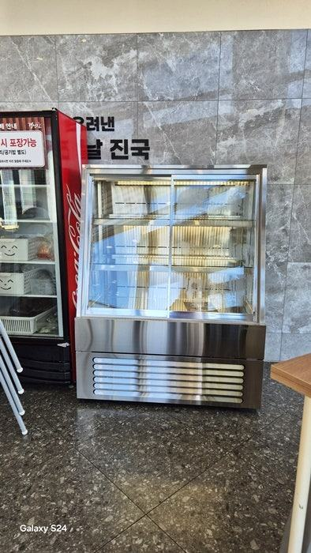
제과쇼케이스는 케이크와 빵을 주인공으로 많은 품목을 길게 보여 주는 진열대이고, 카페쇼케이스는 음료 주문 동선 옆에서 디저트 몇 가지를 곁들여 파는 카운터형 진열대에 가깝습니다. 그래서 진열 품목 수, 계산대와의 위치, 직원이 꺼내는 방향을 기준으로 고르시면 됩니다.
안녕하세요. 케이크부터 카페 디저트까지 진열장을 맞춤으로 만드는 한성쇼케이스입니다.
카페 창업을 준비하시는 사장님들이 견적을 알아보다 헷갈려 하시는 부분이 있습니다. 검색하면 제과쇼케이스, 카페쇼케이스, 케이크쇼케이스가 뒤섞여 나오는데 사진만 봐서는 차이를 알기 어렵거든요.
사실 두 이름은 정해진 규격이 아니라 쓰이는 매장에서 붙은 이름이라 겹치는 부분이 많습니다. 그래도 베이커리에서 쓰는 진열대와 카페 카운터에 붙는 진열대는 요구되는 조건이 분명히 다릅니다.
오늘은 제과쇼케이스와 카페쇼케이스가 실제로 어디서 갈리는지, 우리 매장에는 어느 쪽이 맞는지 판단하는 기준을 정리해 드리겠습니다.
1. 진열하는 품목의 수와 종류
베이커리나 디저트 전문점은 홀케이크, 조각케이크, 타르트, 구움과자까지 품목이 많고, 진열대 자체가 매장의 메뉴판 역할을 합니다.
그래서 제과쇼케이스는 길이가 길고 단이 여러 개이며, 품목별로 구역을 나눌 수 있는 구조가 중요합니다.
카페는 음료가 주력이고 디저트는 몇 가지를 곁들이는 경우가 많습니다. 카페쇼케이스는 케이크 몇 종에 샌드위치나 병음료를 함께 넣는 정도라 크기는 작게, 대신 한 칸 한 칸이 잘 보이도록 만드는 편입니다.
- 디저트가 주력: 길고 단이 많은 제과쇼케이스
- 음료가 주력: 카운터 옆 소형 카페쇼케이스
2. 놓는 자리와 높이
카페쇼케이스는 대부분 주문받는 카운터에 이어 붙습니다. 손님이 음료를 주문하면서 옆에 놓인 디저트를 보고 추가로 고르는 흐름이라 카운터 높이와 맞추는 것이 기본이고, 바리스타 작업 공간을 침범하지 않는 깊이가 중요합니다.
제과쇼케이스는 매장 중앙이나 입구 쪽 벽면에 단독으로 서는 경우가 많습니다. 손님이 진열대를 따라 걸으며 고르기 때문에 앞쪽 통로 폭과 진열대 길이를 함께 계획해야 합니다.
작은 디저트숍이라면 가로 900에 높이 1200 정도의 아담한 맞춤 제과쇼케이스를 쓰신 사례도 있습니다.
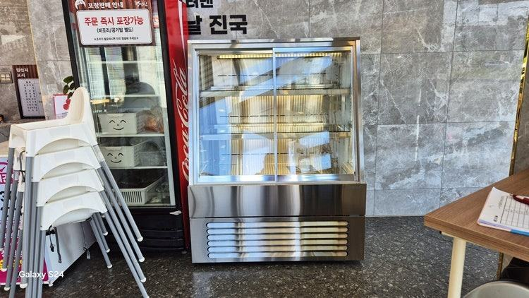
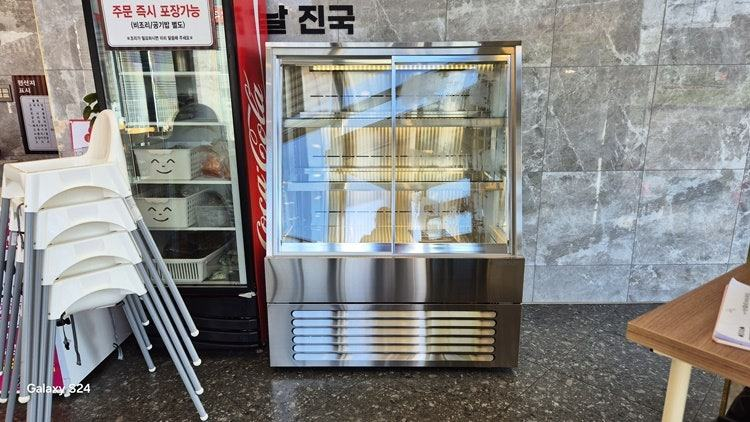
3. 전면 유리 형태와 문 방식
카운터 옆 카페쇼케이스는 손님 눈높이가 진열대보다 위에 있어, 전면 유리가 반듯한 사각형이면 아래 칸이 상단 프레임에 가려 보이기 쉽습니다.
이럴 때 전면 유리를 비스듬히 세운 사선형을 쓰면 선 자세 그대로 아래 칸까지 보입니다.
문 방식은 두 쪽 모두 직원이 뒤에서 꺼내는 뒷문형이 많지만, 카페에서 병음료를 함께 판다면 손님이 직접 여는 앞문 칸을 따로 두기도 합니다.
제과쇼케이스는 진열량이 많아 뒤에서 채우는 동선이 넉넉한지가 더 중요합니다.
- 카운터 높이와 손님 눈높이 차이 확인
- 아래 칸이 가려지면 사선형 검토
- 뒷문 보충 공간 확보
4. 조명과 프레임 색
케이크는 크림과 과일 색이 살아야 하고, 카페는 매장 인테리어와 어우러지는 것이 더 중요합니다. 제과 위주라면 디저트가 먹음직스러워 보이는 주백색 LED를 많이 쓰고, 프레임은 화이트처럼 제품을 돋보이게 하는 색을 고르는 경우가 많습니다.
카페쇼케이스는 카운터 상판과 같은 소재감이나 매장 메인 컬러에 맞추면 따로 놓인 기계가 아니라 카운터의 일부처럼 보입니다.
체크리스트
- 진열할 디저트 품목 수
- 카운터에 붙일지 단독으로 둘지
- 카운터 높이와 손님 눈높이
- 전면 유리 형태(사각·사선)
- 뒷문 보충 동선
- 조명 색과 프레임 색
현장에서 자주 보는 경우: 아래 칸 디저트가 손님 눈에 안 보일 때
디저트는 자신 있는데 진열대 앞에서 손님이 고르지 않고 지나간다는 상담이 종종 들어옵니다. 매장에 가 보면 반듯한 사각 쇼케이스의 상단 프레임과 유리 굴절 때문에 아래 칸 제품이 가려져, 손님이 허리를 숙여야 보이는 경우가 많습니다.
이럴 때는 전면 유리를 비스듬하게 만든 사선형 제과쇼케이스로 바꾸는 방법을 안내해 드립니다. 선 자세에서 전체 라인업이 보이고, 조명이 제품 전체에 고르게 반사돼 디저트 질감과 색이 살아납니다.
매장이 좁거나 층고가 낮을 때 공간이 넓어 보이는 효과도 있습니다.
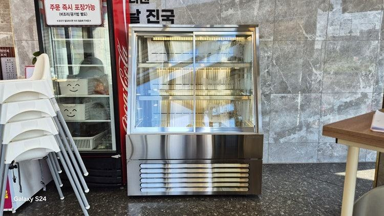
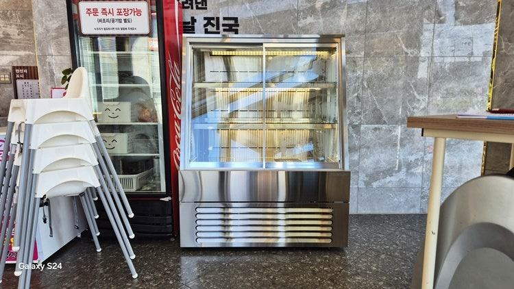
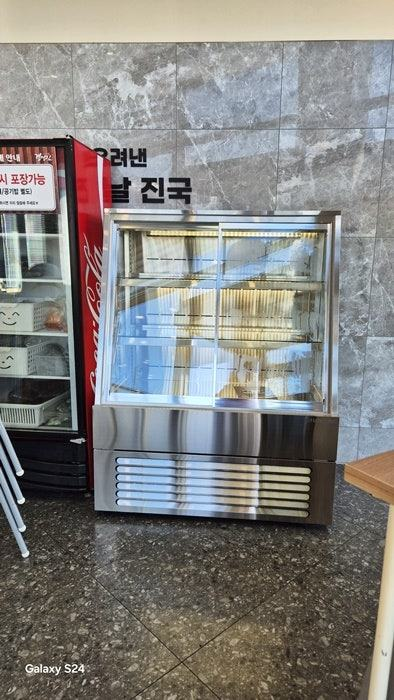
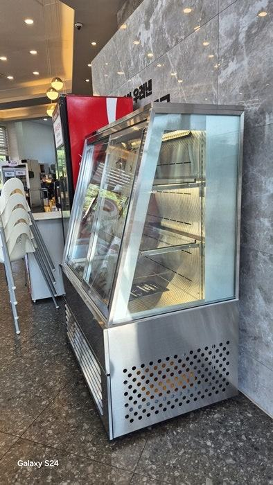
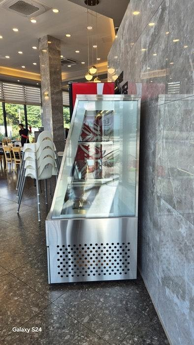
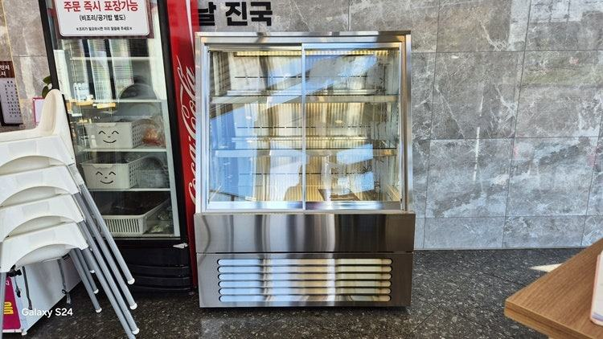
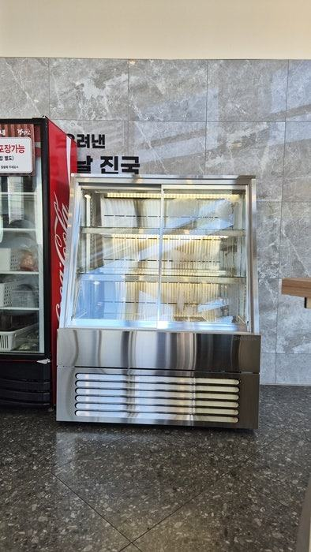
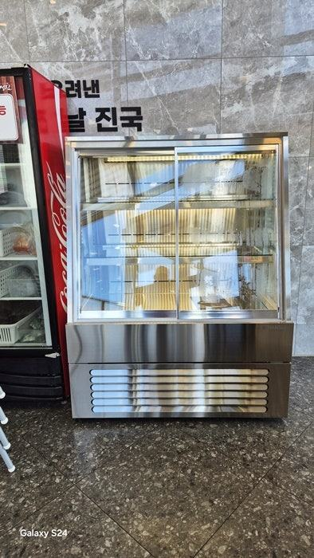
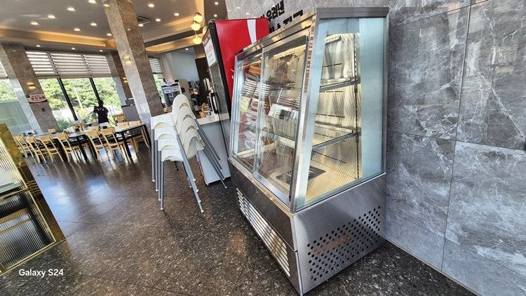

| 구분 | 반 사각 쇼케이스 | 사선형 제과쇼케이스 |
|---|---|---|
| 시각적 개방감 | 상단 프레임에 의한 시야 간섭 발생 | 전면 유리 경사로 하단부까지 노출 |
| 고객 접근성 | 하단 제품 확인 시 허리를 숙여야 함 | 선 자세에서 전체 라인업 확인 가능 |
| 조명 효율 | 상단 조명이 뒤쪽으로 치우칠 수 있음 | 입체적인 각도로 조명이 제품 전체에 반사 |
| 공간 분위기 | 클래식하고 정적인 느낌 | 세련된 쇼룸 분위기 |
자주 묻는 질문
카페인데 케이크 종류가 많으면 제과쇼케이스로 가야 하나요?
디저트 매출 비중이 크고 품목이 많다면 제과쇼케이스처럼 길고 단이 많은 구성이 맞습니다. 카운터와 이어 붙일지, 따로 세울지는 주문 동선을 먼저 그려 보고 정하시면 됩니다.
음료와 케이크를 한 쇼케이스에 같이 넣어도 되나요?
넣을 수는 있지만 음료를 꺼내느라 문을 자주 열면 케이크 칸 온도가 흔들릴 수 있습니다. 칸을 나누거나 음료는 손님이 여는 별도 칸으로 두는 구성을 권해 드립니다.
카운터 높이에 맞춰 쇼케이스 높이를 바꿀 수 있나요?
맞춤 제작이라 카운터 높이와 깊이에 맞춰 만들 수 있습니다. 카운터 도면이나 실측 치수를 보내 주시면 이어 붙였을 때 단차 없이 맞는 구성을 안내해 드립니다.
매장 조건에 맞춰 만드는 한성쇼케이스
원하시는 제품 사진과 설치할 공간 사진만 보내 주셔도 매장에 맞는 구성을 추천해 드립니다.
- 전국 240여 개 A/S 전담 센터 운영
- 본사 대량 자재 매입으로 품질 대비 합리적인 가격
- 유럽제·삼성 냉각 콤프레셔 적용
- 국내 최초 쇼케이스 전문 디자이너 상주
매장 폭과 원하는 진열 구성을 알려 주세요. 실측과 견적을 안내해 드립니다.
031-986-2458